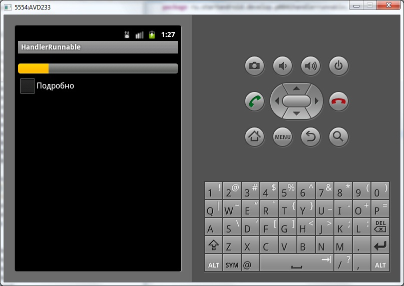
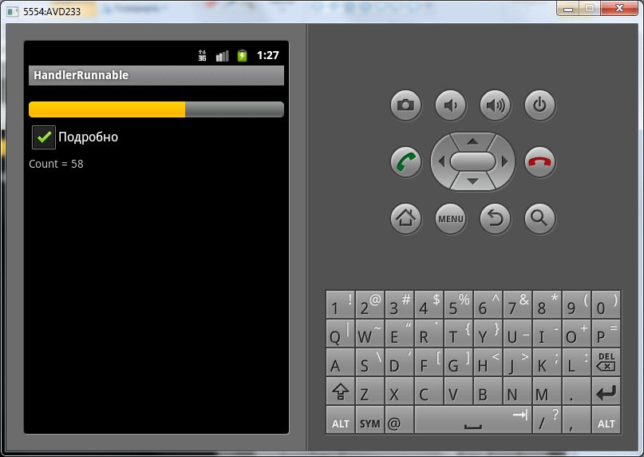
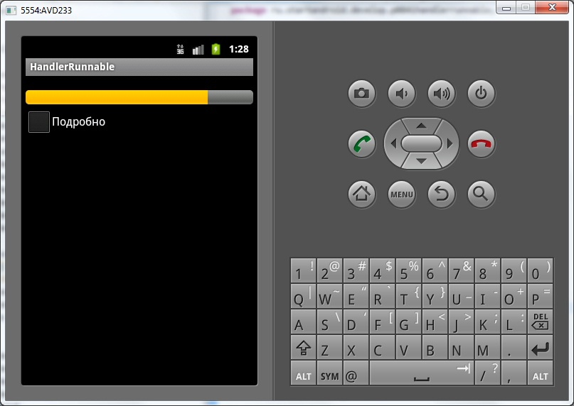

В этом уроке:
- работаем с Handler и Runnable
Кроме обработки сообщений, мы можем попросить Handler выполнить кусок кода – Runnable. В прошлых уроках мы работали с сообщениями, которые содержали атрибуты. Мы их обрабатывали в Handler и в зависимости от значений атрибутов выполняли те или иные действия. Runnable же – это кусок кода, который мы пошлем вместо атрибутов сообщения, и он будет выполнен в потоке, с которым работает Handler. Нам уже ничего не надо обрабатывать.
Для отправки кода в работу используется метод post. Как и сообщения, Runnable может быть выполнен с задержкой (postDelayed), и может быть удален из очереди (removeCallbacks). Напишем приложение, которое продемонстрирует все эти возможности.
Создадим проект:
Project name: P0841_HandlerRunnable
Build Target: Android 4.0
Application name: HandlerRunnable
Package name: ru.startandroid.develop.p0841handlerrunnable
Create Activity: MainActivity
strings.xml:
<?xml version="1.0" encoding="utf-8"?>
<resources>
<string name="app_name">HandlerRunnable</string>
<string name="info">Подробно</string>
</resources>main.xml:
<?xml version="1.0" encoding="utf-8"?>
<LinearLayout
xmlns:android="http://schemas.android.com/apk/res/android"
android:layout_width="fill_parent"
android:layout_height="fill_parent"
android:orientation="vertical">
<ProgressBar
android:id="@+id/pbCount"
style="?android:attr/progressBarStyleHorizontal"
android:layout_width="match_parent"
android:layout_height="wrap_content"
android:layout_marginTop="20dp">
</ProgressBar>
<CheckBox
android:id="@+id/chbInfo"
android:layout_width="wrap_content"
android:layout_height="wrap_content"
android:text="@string/info">
</CheckBox>
<TextView
android:id="@+id/tvInfo"
android:layout_width="wrap_content"
android:layout_height="wrap_content"
android:text=""
android:visibility="gone">
</TextView>
</LinearLayout>ProgressBar, отображающий текущий прогресс. CheckBox, который будет включать отображение доп.информации в TextView.
MainActivity.java:
package ru.startandroid.develop.p0841handlerrunnable;
import java.util.concurrent.TimeUnit;
import android.app.Activity;
import android.os.Bundle;
import android.os.Handler;
import android.util.Log;
import android.view.View;
import android.widget.CheckBox;
import android.widget.CompoundButton;
import android.widget.CompoundButton.OnCheckedChangeListener;
import android.widget.ProgressBar;
import android.widget.TextView;
public class MainActivity extends Activity {
ProgressBar pbCount;
TextView tvInfo;
CheckBox chbInfo;
int cnt;
final String LOG_TAG = "myLogs";
final int max = 100;
Handler h;
/** Called when the activity is first created. */
public void onCreate(Bundle savedInstanceState) {
super.onCreate(savedInstanceState);
setContentView(R.layout.main);
h = new Handler();
pbCount = (ProgressBar) findViewById(R.id.pbCount);
pbCount.setMax(max);
pbCount.setProgress(0);
tvInfo = (TextView) findViewById(R.id.tvInfo);
chbInfo = (CheckBox) findViewById(R.id.chbInfo);
chbInfo.setOnCheckedChangeListener(new OnCheckedChangeListener() {
public void onCheckedChanged(CompoundButton buttonView,
boolean isChecked) {
if (isChecked) {
tvInfo.setVisibility(View.VISIBLE);
// показываем информацию
h.post(showInfo);
} else {
tvInfo.setVisibility(View.GONE);
// отменяем показ информации
h.removeCallbacks(showInfo);
}
}
});
Thread t = new Thread(new Runnable() {
public void run() {
try {
for (cnt = 1; cnt < max; cnt++) {
TimeUnit.MILLISECONDS.sleep(100);
// обновляем ProgressBar
h.post(updateProgress);
}
} catch (InterruptedException e) {
e.printStackTrace();
}
}
});
t.start();
}
// обновление ProgressBar
Runnable updateProgress = new Runnable() {
public void run() {
pbCount.setProgress(cnt);
}
};
// показ информации
Runnable showInfo = new Runnable() {
public void run() {
Log.d(LOG_TAG, "showInfo");
tvInfo.setText("Count = " + cnt);
// планирует сам себя через 1000 мсек
h.postDelayed(showInfo, 1000);
}
};
}В onCreate мы прописываем обработчик для CheckBox. При включении галки отображается TextView и в работу отправляется задание showInfo. При выключении галки – задание showInfo удаляется из очереди.
Далее в новом потоке эмулируем какое-либо действие - запускаем счетчик с паузами. В каждой итерации цикла отправляем в работу задание updateProgress, которое обновляет ProgressBar.
updateProgress – код, который обновляет значение ProgressBar.
showInfo – код, который обновляет TextView и сам себя планирует на выполнение через 1000 мсек. Т.е мы включаем CheckBox, showInfo срабатывает первый раз и само себя планирует на следующий раз. Т.е. этот код лежит в очереди сообщений, обрабатывается и снова кладет себя туда. Так продолжается, пока мы явно его не удалим из очереди (removeCallbacks), выключив CheckBox.
Будем выводить что-нибудь в лог из showInfo, чтобы увидеть, когда он работает, а когда нет.
Все сохраним и запустим приложение. Побежал ProgressBar.

Включим CheckBox.
Появился TextView, который отображает текущее значение счетчика.

В логи при этом добавляется раз в секунду запись:
showInfo
Выключим CheckBox. Текст исчез.

И логи перестали идти. Значит, задание showInfo успешно удалилось из очереди и больше не работает.
Если снова включим CheckBox – оно снова начнет срабатывать и само себя помещать в очередь с задержкой исполнения. Выключаем CheckBox – удаляем его из очереди.